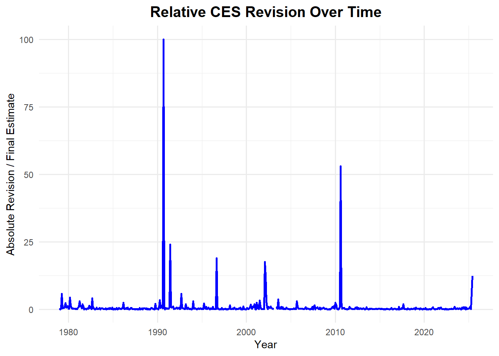
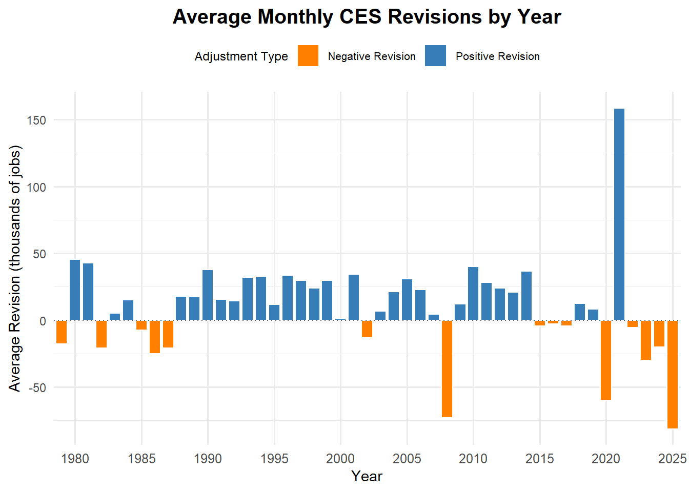
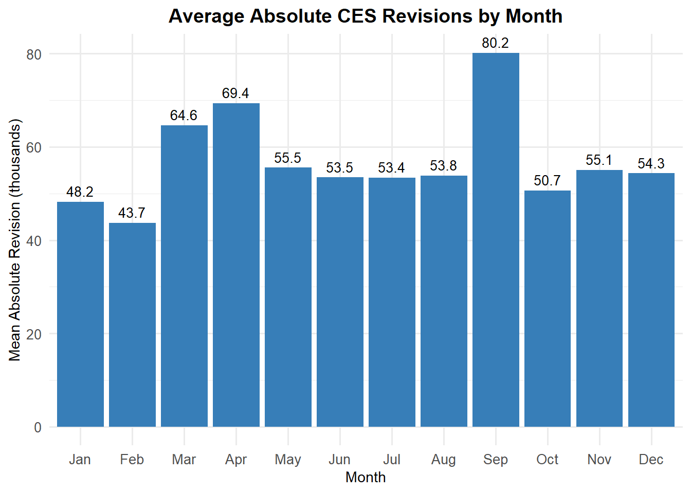
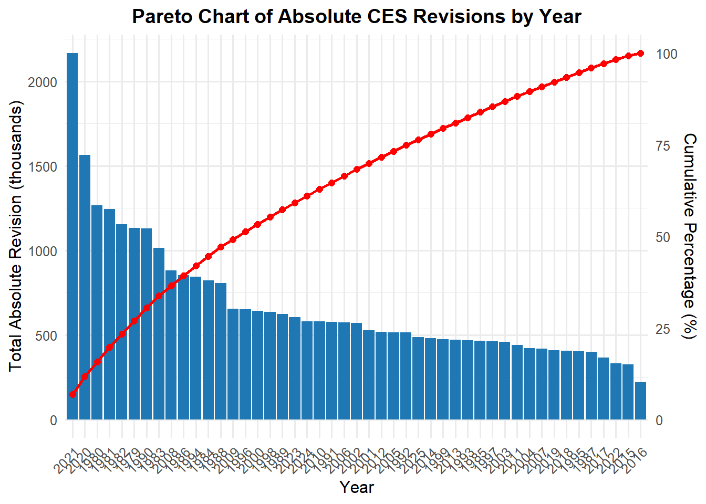
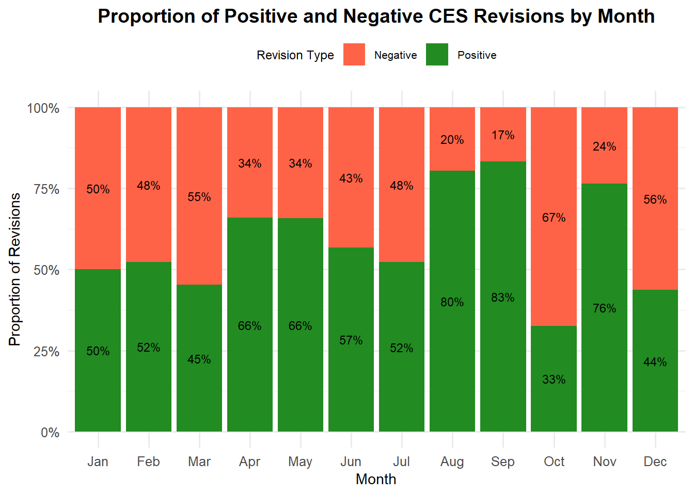
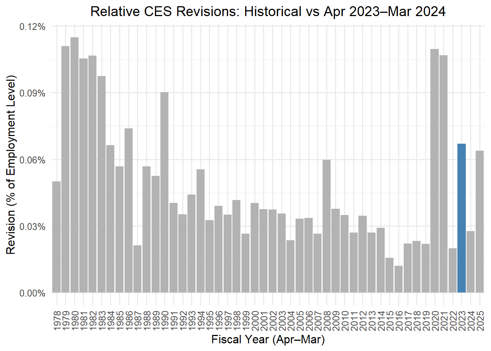
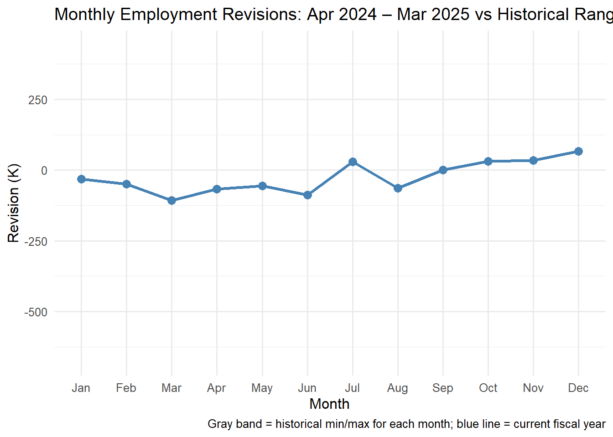

In recent months, headlines have erupted over dramatic downward revisions to U.S. jobs-numbers produced by Bureau of Labor Statistics (BLS), prompting sharp accusations that those initial job-growth reports were misleading; even “faked.” Amid this controversy, this project aims to act as a political “fact-check”: to dig into the data behind the Current Employment Statistics (CES) estimates and subsequent revisions, and evaluate whether public claims about BLS’s reliability hold up. By comparing initial CES estimates with later benchmark and revision data, we will assess how trustworthy the published jobs numbers really are and whether they support, contradict, or only partially back the narrative that led to the dismissal of the agency’s head.
To explore this question, the project reviews recent CES jobs reports, looks at how those numbers were later revised, and compares the patterns across multiple months. Rather than using complex modeling, the goal is simply to place the public claims side-by-side with the actual data and see what story the numbers tell. By examining how often the initial estimates were too high, too low, or largely accurate, the analysis provides a clear, accessible picture of whether the criticism of BLS has merit or whether the narrative has overstated the problem.
Data Acquisition
This section focuses on collecting the below two datasets needed for the fact-check:
The official CES employment estimates and
The revisions made to those initial number
Both datasets are retrieved directly from BLS webpages using structured HTTP requests and HTML extraction, offering a clear basis for checking the accuracy of the reports.
Dataset 1: Final CES Estimates
The first step is to obtain the final CES estimates for seasonally-adjusted total non-farm payroll employment. These monthly figures form the baseline for the analysis, and the task involves replicating the BLS web request in R to extract the full series from 1979 to June 2025 directly from the HTML page.
The below code chunk retrieves employment data directly from the U.S. Bureau of Labor Statistics (BLS) website using the httr2 package. A POST request is constructed to mimic how the BLS form submits data for a specific series (CES0000000001 - Total Nonfarm Employment, Seasonally Adjusted) and a selected date range (starting from 1979 through 2025). The returned HTML page is then parsed with rvest to extract the employment table from the webpage. The result is a raw dataset containing monthly employment numbers organized by year and month exactly as they appear on the BLS site.
View R Code
library(httr2)library(rvest)library(dplyr)# Define the form data and create the request in httr2req <-request("https://data.bls.gov/pdq/SurveyOutputServlet") |>req_method("POST") |>req_headers(`Content-Type`="application/x-www-form-urlencoded",`User-Agent`="Mozilla/5.0 (Windows NT 10.0; Win64; x64) AppleWebKit/537.36 (KHTML, like Gecko) Chrome/142.0.0.0 Safari/537.36",Accept ="text/html,application/xhtml+xml,application/xml;q=0.9,image/avif,image/webp,image/apng,*/*;q=0.8,application/signed-exchange;v=b3;q=0.7",Origin ="https://data.bls.gov",Referer ="https://data.bls.gov/pdq/SurveyOutputServlet" ) |>req_body_form(request_action ="get_data",reformat ="true",from_results_page ="true",from_year ="1979",to_year ="2025",`Go.x`=12,`Go.y`=13,initial_request ="false",data_tool ="surveymost",series_id ="CES0000000001",years_option ="specific_years" )# Perform the request and check the responseresp <-req_perform(req)# Check if request was successfulresp_status(resp)# Extract htmlhtml_content <-resp_body_html(resp)### Extract the table using rvest# Select the table with class 'regular-data'table_node <- html_content |>html_element("table.regular-data") # CSS selector for class 'regular-data'# Convert to R data framedata <- table_node |>html_table(fill =TRUE)# View first few rows#head(data)#tail(data)
After retrieving the raw HTML table, the below code block cleans and reshapes the data into a usable time-series format. The code removes unwanted rows (the bottom-most row), converts the wide month-based table into a long pivot-like structure, builds proper date variables, filters the series to the required time window, and sorts the data chronologically. Finally, the cleaned dataset is formatted for readability and displayed as an interactive table using the DT package, allowing users to explore the employment series directly on the webpage.
View R Code
library(tidyr)library(lubridate)library(stringr)ces_estimates_data <- data |># Removing the last row (as it contains unnecessary information)slice(1:(n() -1)) |># Creating pivot from wide (Jan–Dec columns) to longpivot_longer(cols = Jan:Dec,names_to ="month",values_to ="level" ) |># Creating a proper date columnmutate(# Convert month abbreviations to numbersmonth_num =match(month, month.abb),# Build date in required format (YYYY-MM-01)date =ymd(sprintf("%s-%02d-01", Year, month_num)),level =as.numeric(level) ) |># Filtering ONLY from 1979-01-01 to 2025-06-01filter(date >=ymd("1979-01-01"), date <=ymd("2025-06-01")) |># Keeping only required columnsselect(date, level) |># Sorting from oldest date to newestarrange(date)library(stringr)format_titles <-function(df){colnames(df) <-str_replace_all(colnames(df), "_", " ") |>str_to_title() df}library(DT)ces_estimates_data |>format_titles() |>datatable(options =list(searching =FALSE, info =FALSE)) |>formatRound(c('Level'), 0)
Dataset 2: CES Revisions
To extend our analysis beyond headline employment levels, this section focuses on retrieving the official CES Non-Farm Payroll Revisions published by the Bureau of Labor Statistics (BLS). Unlike the monthly employment series pulled earlier, these revisions are buried within a complex static webpage whose tables must be carefully scraped and reconstructed. Each year’s revision table contains the original first estimate, the second and third/final estimate, and their difference information that allows us to quantify how early employment reports are later adjusted. Using a structured workflow built on httr2 and rvest, we will systematically access the CES revision tables for every month from January 1979 through June 2025, extract the required fields, and assemble a clean, unified dataset.
The code implements a robust web scraping workflow to systematically extract CES revision data for all years from 1979 to 2025. Using httr2, it first sends a browser-like request to the BLS webpage, ensuring access without triggering a 403 Forbidden error. Each year’s table is then retrieved and processed in a for loop, which handles nuances such as duplicate column names and multi-row headers. The slice function isolates the relevant monthly data (12 rows per year, or 6 for 2025), while lubridate’s ym function converts the textual month-year combinations into proper Date objects. Key columns such as the original estimate, final estimate, and their revision are mapped and cleaned to numeric format. Finally, all yearly tables are combined into a single, tidy dataset, ready for analysis or visualization, with consistent structure and properly parsed dates.
View R Code
#install.packages(c("httr2", "rvest", "dplyr", "lubridate"))library(httr2)library(rvest)library(dplyr)library(lubridate)# Headers to avoid IP being flaggedreq <-request("https://www.bls.gov/web/empsit/cesnaicsrev.htm") |>req_headers(`User-Agent`="Mozilla/5.0 (Windows NT 10.0; Win64; x64) AppleWebKit/537.36 (KHTML, like Gecko) Chrome/142.0.0.0 Safari/537.36" )resp <- req |>req_perform()html_content <- resp |>resp_body_html()# Year IDstable_ids <-as.character(1979:2025)# Initialize list to store resultsfinal_list <-list()for (year in table_ids) {# Extract table df <- html_content |>html_element(paste0("table#", year)) |>html_table(fill =TRUE)# Remove duplicate column namescolnames(df) <-make.unique(colnames(df))# Skip first 2 rows (headers) and slice first 12 rows (or 6 for 2025) n_rows <-if (year =="2025") 6else12 df_data <- df |>slice(-1:-2) |>slice(1:n_rows)# Combine month + year to create proper date string# Assume first column has month names like "Jan", "Feb", etc. date_str <-paste(year, df_data[[1]]) date_parsed <-ym(date_str) # lubridate parses "1979 Jan" -> "1979-01-01"# Map columns: original = 3, final = 5, revision = 8 df_mapped <-tibble(date = date_parsed,original =as.numeric(gsub(",", "", df_data[[3]])),final =as.numeric(gsub(",", "", df_data[[5]])),revision =as.numeric(gsub(",", "", df_data[[8]])) ) final_list[[year]] <- df_mapped}# Combine all yearsces_revisions_data <-bind_rows(final_list)# Check#tail(ces_revisions_data)#nrow(ces_revisions_data)#sum(is.na(ces_revisions_data))library(DT)ces_revisions_data |>format_titles() |>datatable(options =list(searching =FALSE, info =FALSE))
Data Integration and Exploration
This stage brings together multiple data sources from CES employment revisions to complementary labor market indicators to create a unified, analysis-ready foundation. By harmonizing formats, resolving inconsistencies, and extracting structured tables directly from the BLS website, this phase ensures that the datasets can be explored cohesively.
View R Code
library(dplyr)combined_data <- ces_estimates_data |>rename(`employee_count_(in_thousands)`= level) |>left_join(ces_revisions_data, by ="date")combined_data |>format_titles() |>datatable(options =list(searching =FALSE, info =FALSE)) |>formatRound(c("Employee Count (In Thousands)"), 0)
With the data now consolidated, we can begin uncovering patterns, validating assumptions, and identifying statistical signals that will guide deeper modeling and interpretation throughout the project. A working version of the data was created by adding time identifiers such as year, decade, and month, and by generating derived measures including employment level, absolute revision, and relative revisions to facilitate deeper analysis.
Quantitative analysis of the combined CES estimates and revisions dataset provides insights into employment trends and data accuracy over the past 45 years. Key metrics such as overall employment levels, absolute and relative revisions, and the frequency of positive versus negative revisions are computed. These statistics help identify periods of large adjustments, systematic patterns across months or decades, and the overall reliability of initial CES estimates compared to their final values.
1. Largest positive and negative revisions
This statistic identifies the most extreme upward and downward adjustments ever applied to the employment estimates across the full sample period.
View R Code
# 1 Largest positive and negative revisionslargest_revisions <- working_data |>summarise(max_revision =max(revision, na.rm =TRUE),max_revision_date = date[which.max(revision)],min_revision =min(revision, na.rm =TRUE),min_revision_date = date[which.min(revision)] )largest_revisions |>format_titles() |>datatable(options =list(searching =FALSE, info =FALSE))
The largest upward revision was in November 2021 with an increase of 437 thousand jobs, while the largest downward revision was in March 2020 with a decrease of 672 thousand jobs, reflecting the extreme disruption at the start of the pandemic.
2. Fraction of positive revisions per year and per decade
This measure evaluates how often revisions move upward in different years and decades, offering a perspective on long term directional tendencies in the revision process.
View R Code
# 2 Fraction of positive revisions per year and per decade## Yearly fraction of positive revisionspositive_revision_fraction_year <- working_data |>group_by(year) |>summarise(fraction_positive =mean(revision >0, na.rm =TRUE) ) |>arrange(year)## Decade-wise fraction of positive revisionspositive_revision_fraction_decade <- working_data |>group_by(decade) |>summarise(fraction_positive =mean(revision >0, na.rm =TRUE) ) |>arrange(decade)positive_revision_fraction_year |>format_titles() |>datatable(options =list(searching =FALSE, info =FALSE)) |>formatRound(c("Fraction Positive"), 5)
View R Code
positive_revision_fraction_decade |>format_titles() |>datatable(options =list(searching =FALSE, info =FALSE)) |>formatRound(c("Fraction Positive"), 5)
Revisions were most likely to be positive during the 1990s and 2010s, with roughly two thirds of all revisions increasing the initial estimate in those decades. The 1970s and 2020s show the lowest shares of positive revisions, indicating periods where early estimates more often overstated employment.
3. Relative revision over final estimate by year
This summary examines how the size of revisions compares with the final published estimate across different years, revealing changes in the precision of early payroll releases.
View R Code
# 3 Relative revision over final estimate by yearrel_revision_over_final <- working_data |>group_by(year) |>summarise(mean_rel_revision_final =mean(rel_revision_final, na.rm =TRUE),median_rel_revision_final =median(rel_revision_final, na.rm =TRUE) ) |>arrange(year)rel_revision_over_final |>format_titles() |>datatable(options =list(searching =FALSE, info =FALSE)) |>formatRound(c("Mean Rel Revision Final", "Median Rel Revision Final"), 2)
The relative revision over the final estimate has decreased over time, which indicates that early CES estimates have become more consistent with final published values in recent years.
4. Absolute revision relative to total employment level
This metric evaluates how large the typical revision is when scaled by the overall level of employment, which gives a sense of its practical significance.
The absolute revision as a share of total employment has steadily declined over the long run, showing that swings in revisions now represent a much smaller portion of overall payroll levels.
5. Average absolute revision by month
This analysis investigates whether some months consistently show larger or smaller adjustments, which helps uncover recurring calendar related patterns in the data.
Revisions tend to be largest in September and April, while January and February generally experience the smallest revisions, indicating some seasonality in the revision patterns.
6. Average revision overall
This overall summary captures the typical size of revisions in both absolute terms and relative to the employment level, providing a baseline understanding of revision behavior.
On average, CES revisions amount to roughly 57 thousand employees, with a median of 42 thousand. Relative to total employment, the mean revision is about 0.048 percent and the median is 0.032 percent, indicating that most revisions are small compared to overall employment levels.
Visual Analysis
To further explore revision behavior and identify meaningful patterns, the next section presents a set of visual analyses. These plots help illustrate how revisions vary across time, frequency, and magnitude, and provide a clearer view of trends that complement the summary statistics reported earlier.
1. Which years saw the biggest relative CES revisions? This plot visualizes the relative magnitude of CES revisions over time, highlighting how the absolute difference between initial and final employment estimates fluctuates across decades.
View R Code
#install.packages("ggplot2")library(ggplot2)working_data |>ggplot(aes(x = date, y = rel_revision_final)) +geom_line(color ="blue", size =1) +labs(title ="Relative CES Revision Over Time",x ="Year",y ="Absolute Revision / Final Estimate" ) +theme_minimal(base_size =12) +theme(plot.title =element_text(face ="bold", size =15, hjust =0.5),axis.title =element_text(size =11),axis.text =element_text(size =9) )

Interpretation: Two prominent spikes are observed in 1991 and 2011, indicating unusually large revisions in those years. Overall, most years show relatively small adjustments, reflecting stability in CES estimates outside major economic events.
2. Which years experienced the largest average monthly CES adjustments? This chart visualizes the average monthly CES revisions for each year, highlighting positive and negative adjustments to identify periods with significant changes in employment estimates.
View R Code
yearly_revision <- working_data |>group_by(year =year(date)) |>summarise(avg_revision =mean(revision, na.rm =TRUE))# Adjusting X axis labels to avoid them being overlappedx_breaks <-seq(1980, 2025, by =5)ggplot(yearly_revision, aes(x =factor(year), y = avg_revision)) +# Bars with positive/negative colorgeom_col(aes(fill = avg_revision >0), width =0.85, color ="white") +# Zero linegeom_hline(yintercept =0, linetype ="dotted", color ="gray40") +# Fill colors for positive and negativescale_fill_manual(values =c("TRUE"="#377eb8", "FALSE"="#ff7f00"),labels =c("Negative Revision", "Positive Revision"),name ="Adjustment Type" ) +scale_x_discrete(breaks = x_breaks) +# Titles and labelslabs(title ="Average Monthly CES Revisions by Year",x ="Year",y ="Average Revision (thousands of jobs)" ) +theme_minimal(base_size =12) +theme(plot.title =element_text(face ="bold", size =15, hjust =0.5),plot.subtitle =element_text(size =11, margin =margin(b =8), hjust =0.5),axis.title =element_text(size =11),axis.text.y =element_text(size =9),legend.position ="top",legend.title =element_text(size =9),legend.text =element_text(size =8) )

Interpretation: The largest positive adjustment occurred in 2021, while notable negative revisions appeared in 2008 and 2020, reflecting downward corrections in employment estimates during economic slowdowns. The chart emphasizes how revisions vary across years, capturing periods of significant over- or under-estimation in initial reports.
3. Which months experience the largest CES revisions?
This chart illustrates the average absolute CES revisions by month, highlighting seasonal patterns in how employment estimates are adjusted across the year.
View R Code
working_data |>group_by(month_lbl) |>summarise(mean_abs_revision =mean(abs_revision, na.rm =TRUE) ) |>ggplot(aes(x = month_lbl, y = mean_abs_revision)) +geom_col(fill ="#377eb8") +# Add data labels on top of barsgeom_text(aes(label =round(mean_abs_revision, 1)), vjust =-0.5, size =3.5) +labs(title ="Average Absolute CES Revisions by Month",x ="Month",y ="Mean Absolute Revision (thousands)" ) +theme_minimal(base_size =12) +theme(plot.title =element_text(face ="bold", size =14, hjust =0.5),axis.title =element_text(size =11),axis.text =element_text(size =10) )

Interpretation: September shows the highest mean absolute revision at 80.2, followed by April at 69.4, indicating these months often see larger adjustments. February has the smallest average revision at 43.7, suggesting that some months consistently experience smaller changes in employment estimates.
4. Which years contribute most to total CES revisions?
This Pareto chart ranks years by total absolute CES revisions, highlighting which years account for the largest share of cumulative adjustments. The overlaid line indicates the cumulative percentage contribution of revisions over all years.
View R Code
library(ggplot2)library(dplyr)library(scales)# Prepare data: total absolute revision per yearpareto_data <- working_data |>mutate(year =year(date)) |>group_by(year) |>summarise(total_abs_revision =sum(abs_revision, na.rm =TRUE)) |>arrange(desc(total_abs_revision)) |>mutate(cum_percentage =cumsum(total_abs_revision) /sum(total_abs_revision) *100,year =factor(year, levels = year) # preserve descending order )# Pareto chartggplot(pareto_data, aes(x = year)) +geom_col(aes(y = total_abs_revision), fill ="#1f78b4") +geom_line(aes(y = cum_percentage *max(total_abs_revision)/100, group =1), color ="red", size =1) +geom_point(aes(y = cum_percentage *max(total_abs_revision)/100), color ="red", size =2) +scale_y_continuous(name ="Total Absolute Revision (thousands)",sec.axis =sec_axis(~ . /max(pareto_data$total_abs_revision) *100, name ="Cumulative Percentage (%)") ) +labs(title ="Pareto Chart of Absolute CES Revisions by Year",x ="Year" ) +theme_minimal(base_size =12) +theme(plot.title =element_text(face ="bold", size =14, hjust =0.5),axis.text.x =element_text(angle =45, hjust =1) )

Interpretation: The top years dominate CES revisions, with 2021, 2020 and 1980 collectively accounting for a substantial portion of total adjustments. The red cumulative line shows that a few key years drive most of the revisions, illustrating that large employment estimate changes are concentrated in specific periods rather than evenly distributed.
5. How Do Positive and Negative CES Revisions Fluctuate Across the Months?
This code calculates the monthly proportion of positive and negative CES revisions and visualizes them as a 100% stacked bar chart, providing a clear view of the balance between upward and downward adjustments over time.
View R Code
library(ggplot2)library(dplyr)library(scales)# Prepare monthly revision data with positive/negative categories, excluding NAmonthly_revision_cat <- working_data |>filter(!is.na(revision)) |>mutate(month_lbl =factor(month_lbl, levels = month.abb),revision_type =ifelse(revision >=0, "Positive", "Negative") ) |>group_by(month_lbl, revision_type) |>summarise(total_revision =sum(abs(revision), na.rm =TRUE), .groups ="drop") |>group_by(month_lbl) |>mutate(prop_revision = total_revision /sum(total_revision),label =paste0(round(prop_revision *100), "%") )# 100% stacked bar chart with labelsggplot(monthly_revision_cat, aes(x = month_lbl, y = prop_revision, fill = revision_type)) +geom_col() +geom_text(aes(label = label), position =position_stack(vjust =0.5), size =3) +scale_y_continuous(labels =percent_format()) +scale_fill_manual(values =c("Positive"="forestgreen", "Negative"="tomato")) +labs(title ="Proportion of Positive and Negative CES Revisions by Month",x ="Month",y ="Proportion of Revisions",fill ="Revision Type" ) +theme_minimal(base_size =12) +theme(plot.title =element_text(face ="bold", hjust =0.5, size =14),axis.title =element_text(size =11),legend.position ="top",legend.title =element_text(size =9),legend.text =element_text(size =8) )

Interpretation: The chart reveals seasonal patterns in revisions. Positive revisions dominate in late summer and early fall (Aug–Sep), while negative revisions peak in March, October, and December, highlighting months with more downward adjustments. This visualization helps identify trends and potential periods of volatility in CES revisions.
Statistical Inference
This section evaluates five statistical claims about CES revisions using formal hypothesis testing. All tests use the infer package and follow the two sample or proportion testing procedures demonstrated in class. We evaluate changes in revision size, direction, and variability across different periods. Each test includes a code block, a summary table, and an interpretation.
TEST 1
Has the fraction of negative revisions increased after 2000?
Type: binomial proportion test
To assess whether negative CES revisions became more common after 2000, a two-sample proportion test was performed using the infer package. An indicator for negative revisions was constructed, and observations were classified into Pre-2000 and Post-2000 periods. The proportions of negative revisions were then compared across periods, followed by a formal hypothesis test to determine whether the post-2000 proportion differs significantly from the earlier period. The workflow is summarized in the code below.
View R Code
#install.packages("infer")#install.packages("kableExtra")library(dplyr)library(infer)library(knitr)library(kableExtra)# Prepare dataces_test_data <- working_data |>filter(!is.na(revision)) |>mutate(is_negative = revision <0,post_2000 =factor(year >=2000, labels =c("Pre-2000", "Post-2000")) )# Two-sample proportion test (negative revisions Pre vs Post 2000)test1_result <- ces_test_data |>prop_test(is_negative ~ post_2000, alternative ="two.sided")# Descriptive proportionstest1_props <- ces_test_data |>group_by(post_2000) |>summarize(`Total Revisions`=n(),negative =sum(is_negative),positive =sum(!is_negative),`% Negative`=round((negative /`Total Revisions`) *100, 1),`% Positive`=round((positive /`Total Revisions`) *100, 1),.groups ="drop" )# Format test results properlytest1_display <- test1_result |>select(`Test Statistic`= statistic, `P-value`= p_value, `Lower Confidence Limit`= lower_ci, `Upper Confidence Limit`= upper_ci)# Print tabletest1_props |>kable(caption ="Revision Direction by Period",digits =1,col.names =c("Period", "Total Revisions", "Negative", "Positive", "% Negative", "% Positive")) |>kable_styling(bootstrap_options =c("striped", "hover", "condensed"),full_width =FALSE, position ="center") |>row_spec(0, bold =TRUE, color ="white", background ="#1F4E79")
Revision Direction by Period
Period
Total Revisions
Negative
Positive
% Negative
% Positive
Pre-2000
252
102
150
40.5
59.5
Post-2000
304
135
169
44.4
55.6
The distribution of revisions shows that the share of negative revisions increases slightly in the post-2000 period compared with the pre-2000 period, although positive revisions continue to make up the majority in both periods. Now let us examine whether this difference is statistically meaningful using the proportion test.
View R Code
test1_display |>kable(caption ="Proportion Test - Negative Revisions Post-2000 vs Pre-2000",digits =3) |>kable_styling(bootstrap_options =c("striped", "hover", "condensed"),full_width =FALSE, position ="center") |>row_spec(0, bold =TRUE, color ="white", background ="#1F4E79")
Proportion Test - Negative Revisions Post-2000 vs Pre-2000
Test Statistic
P-value
Lower Confidence Limit
Upper Confidence Limit
0.718
0.397
-0.125
0.047
Interpretation:
The proportion test indicates that the difference in negative revision rates between the pre-2000 and post-2000 periods is not statistically significant at the 5% significance level. The p-value of 0.397 is well above this threshold, and the confidence interval for the difference in proportions spans zero, ranging from negative 0.125 to positive 0.047. This suggests that the observed increase in negative revisions after 2000 could be due to random variation rather than a systematic shift in revision behavior.
Tip
Extra Credit:
Non-technical explanation:
The analysis shows that the difference could easily happen by chance — there’s no strong evidence that revisions became more negative after 2000. In other words, the observed increase is small enough that it could just be random variation.
TEST 2
Has the average revision increased post-2020?
Type: two-sample t-test
To examine whether the average CES revision changed after 2020, observations are classified into Pre-2020 and Post-2020 periods. The mean revision is then calculated for each period, followed by a formal t-test to determine whether the difference in average revisions is statistically significant. The workflow is summarized in the code below.
View R Code
library(dplyr)library(knitr)library(kableExtra)# Prepare dataces_test_data2 <- working_data |>filter(!is.na(revision)) |>mutate(post_2020 =factor(year >=2020, labels =c("Pre-2020", "Post-2020")))# Descriptive statisticstest2_desc <- ces_test_data2 |>group_by(post_2020) |>summarize(`Number of Observations`=n(),`Mean Revision`=round(mean(revision), 4),`SD Revision`=round(sd(revision), 4),.groups ="drop" )# Two-sample t-testtest2_result <-t.test(revision ~ post_2020, data = ces_test_data2, alternative ="two.sided", var.equal =FALSE)# Format test resultstest2_display <-data.frame(`Test Statistic`=round(test2_result$statistic, 4),`P-value`=round(test2_result$p.value, 4),`Lower Confidence Limit`=round(test2_result$conf.int[1], 4),`Upper Confidence Limit`=round(test2_result$conf.int[2], 4))# Print descriptive tabletest2_desc |>kable(caption ="Average CES Revisions by Period",digits =4,col.names =c("Period", "Number of Observations", "Mean Revision", "SD Revision")) |>kable_styling(bootstrap_options =c("striped", "hover", "condensed"),full_width =FALSE, position ="center") |>row_spec(0, bold =TRUE, color ="white", background ="#1F4E79")
Average CES Revisions by Period
Period
Number of Observations
Mean Revision
SD Revision
Pre-2020
490
12.7143
71.9269
Post-2020
66
0.4545
142.4369
The descriptive statistics show that the average CES revision decreased from 12.71 in the pre-2020 period to 0.45 in the post-2020 period, while the variability of revisions increased substantially, with the standard deviation rising from 71.93 to 142.44.
View R Code
# Print test results tabletest2_display |>kable(caption ="Two-sample t-test - Average Revisions Post-2020 vs Pre-2020",digits =4) |>kable_styling(bootstrap_options =c("striped", "hover", "condensed"),full_width =FALSE, position ="center") |>row_spec(0, bold =TRUE, color ="white", background ="#1F4E79")
Two-sample t-test - Average Revisions Post-2020 vs Pre-2020
Test.Statistic
P.value
Lower.Confidence.Limit
Upper.Confidence.Limit
t
0.6875
0.494
-23.3079
47.8274
Interpretation: The two-sample t-test indicates that this difference in average revisions is not statistically significant at the 5% significance level. The p-value of 0.494 is well above 0.05, and the 95% confidence interval for the difference spans from -23.31 to 47.83, including zero. This suggests that the apparent decrease in mean revisions post-2020 could be due to random variation rather than a systematic change in revision behavior.
Tip
Extra Credit:
Non-technical explanation:
The results show that the difference could easily happen by chance. In other words, the apparent drop in average revisions after 2020 is small enough that it might just be random variation rather than a real trend.
TEST 3
Did large revisions (more than a 50% month-over-month change) become more common after 2020?
Type: two-sample proportion test
To assess whether substantial month-over-month fluctuations in CES revisions have become more prevalent in recent years, revisions were analyzed using a threshold based on relative changes from one month to the next. A large revision was defined as a month-over-month change exceeding fifty percent of the previous month’s revision value. The data were divided into Pre-2020 and Post-2020 periods, and the proportions of large revisions were compared across these groups. The code below summarizes the construction of these indicators and the resulting descriptive statistics.
View R Code
library(dplyr)library(knitr)library(kableExtra)# Prepare data for month-over-month revision analysisces_test_data3 <- working_data |>filter(!is.na(revision)) |>arrange(date) |>mutate(prev_revision =lag(revision),mom_change =abs(revision - prev_revision) /abs(prev_revision),is_large = mom_change >=0.50, # Large revisions >=50% of previous month's revisionpost_2020 =factor(year >=2020, labels =c("Pre-2020", "Post-2020")) ) |>filter(!is.na(is_large)) # Remove first row which has no previous month# Descriptive proportionstest3_props <- ces_test_data3 |>group_by(post_2020) |>summarize(`Total Revisions`=n(),large =sum(is_large),not_large =sum(!is_large),`% Large`=round((large /`Total Revisions`) *100, 1),`% Not Large`=round((not_large /`Total Revisions`) *100, 1),.groups ="drop" )# Two-sample proportion test (large revisions Pre vs Post 2020)test3_result <-prop.test(x = test3_props$large,n = test3_props$`Total Revisions`,alternative ="two.sided",conf.level =0.95)# Format test resultstest3_display <-data.frame(`Test Statistic`=round(test3_result$statistic, 4),`p-value`=round(test3_result$p.value, digits =4),`Lower Confidence Limit`=round(test3_result$conf.int[1], 4),`Upper Confidence Limit`=round(test3_result$conf.int[2], 4))# Print descriptive tabletest3_props |>kable(caption ="Large Month-over-Month CES Revisions by Period",digits =1,col.names =c("Period", "Total Revisions", "Large", "Not Large", "% Large", "% Not Large")) |>kable_styling(bootstrap_options =c("striped", "hover", "condensed"),full_width =FALSE, position ="center") |>row_spec(0, bold =TRUE, color ="white", background ="#1F4E79")
Large Month-over-Month CES Revisions by Period
Period
Total Revisions
Large
Not Large
% Large
% Not Large
Pre-2020
489
387
102
79.1
20.9
Post-2020
66
53
13
80.3
19.7
Large revisions make up roughly eighty percent of observations in both periods, increasing only slightly from 79.1 percent pre-2020 to 80.3 percent post-2020. This suggests very little change in their overall frequency. A formal proportion test was conducted to determine whether this slight increase in large month-over-month revisions post-2020 is statistically significant.
View R Code
# Print proportion test resultstest3_display |>kable(caption ="Proportion Test - Large M-o-M Revisions Post-2020 vs Pre-2020",digits =3,col.names =c("Chi-squared Value", "p-value", "Lower Confidence Limit", "Upper Confidence Limit") ) |>kable_styling(bootstrap_options =c("striped", "hover", "condensed"),full_width =FALSE,position ="center" ) |>row_spec(0, bold =TRUE, color ="white", background ="#1F4E79")
Proportion Test - Large M-o-M Revisions Post-2020 vs Pre-2020
Chi-squared Value
p-value
Lower Confidence Limit
Upper Confidence Limit
X-squared
0.003
0.955
-0.123
0.1
Interpretation: The proportion test indicates that the small increase in large month-over-month revisions post-2020 is not statistically significant at the 5% significance level. The p-value of 0.955 is far above this threshold, and the confidence interval for the difference in proportions spans zero, ranging from -0.123 to 0.1. This suggests that the observed change could easily be due to random variation rather than a systematic increase in large revisions.
Tip
Extra Credit:
Non-technical explanation:
We looked at whether big month-to-month revisions became more common after 2020. The analysis shows there’s no convincing evidence of a real increase; the tiny change we see could very easily happen by chance. In short, there’s no sign of a systematic shift in how revisions occur.
TEST 4
Is the average revision significantly different from zero?
Type: one-sample t-test
To assess whether CES revisions, on average, deviate from zero, a one-sample t-test is performed. All available revision observations are included, and the test evaluates whether the mean revision differs significantly from zero, indicating a systematic tendency for upward or downward adjustments. The workflow is summarized below.
View R Code
library(dplyr)library(knitr)library(kableExtra)# Prepare dataces_test_data4 <- working_data |>filter(!is.na(revision))# Descriptive statisticstest4_summary <- ces_test_data4 |>summarize(`Number of Observations`=n(),`Mean Revision`=mean(revision),`SD Revision`=sd(revision) )# One-sample t-test (mean revision vs 0)test4_result <-t.test(ces_test_data4$revision, mu =0, alternative ="two.sided")# Format test resultstest4_display <-data.frame(`T-Statistic`=round(test4_result$statistic, 4),`p-value`=round(test4_result$p.value, 4),`Lower Confidence Limit`=round(test4_result$conf.int[1], 4),`Upper Confidence Limit`=round(test4_result$conf.int[2], 4))# Combine descriptive stats and t-test resultstest4_combined <-cbind( test4_summary, test4_display)# Print combined table# Rename columnscolnames(test4_combined) <-c("Number of Observations", "Mean Revision", "SD Revision", "t-Test Value", "P-Value", "Lower Confidence Limit", "Upper Confidence Limit")# Print combined tabletest4_combined |>kable(caption ="CES Revisions: Descriptive Statistics and One-Sample t-Test vs Zero",digits =3 ) |>kable_styling(bootstrap_options =c("striped", "hover", "condensed"),full_width =FALSE,position ="center" ) |>row_spec(0, bold =TRUE, color ="white", background ="#1F4E79")
CES Revisions: Descriptive Statistics and One-Sample t-Test vs Zero
Number of Observations
Mean Revision
SD Revision
t-Test Value
P-Value
Lower Confidence Limit
Upper Confidence Limit
t
556
11.259
83.367
3.184
0.002
4.314
18.204
Interpretation: The one-sample t-test indicates that the mean CES revision is significantly greater than zero. With a p-value of 0.002, well below the 5% significance level, the result provides strong evidence that the average revision is not zero. The 95% confidence interval ranges from 4.314 to 18.204, confirming that the true mean is positive. This suggests that, on average, CES revisions tend to increase rather than remain neutral.
Tip
Extra Credit:
Non-technical explanation:
The test shows that the average CES revision is greater than zero, with strong evidence that this difference is real and not due to chance. This means that, on average, the CES employment numbers are revised upward rather than staying the same.
Fact Checks of Claims about BLS
Public debate on the monthly jobs report often oversimplifies technical details into broad claims about federal employment data. To assess two common assertions, the full CES dataset (1979–2025) was analyzed using revision patterns, summary statistics, and prior visualizations.
Evidence Base: Quantitative results from the statistical analysis, visual insights from exploratory charts, and fully reproducible code and data ensure transparency.
Fact-Check #1
Background
Claim Title: BLS intentionally fudged numbers and revised job growth downward by 818K
Claim Made by: Senator Roger Marshall (R-Kansas), joined by several other Republican senators
“The public deserves an investigation into whether the numbers were intentionally fudged to boost the Harris-Biden administration. Using taxpayer dollars to mislead the public for political gain is an outrageous betrayal of trust and one of the reasons Americans have lost all faith in this Administration. Manipulating the numbers to spin a false narrative while people are struggling to afford gas and groceries is not only dishonest — it’s insulting.”
Assessment
The claim centers on the assertion that BLS “fudged” monthly job numbers, pointing to a benchmark revision that lowered the prior year’s employment level by 818,000. Benchmark revisions, however, are routine annual adjustments that incorporate more complete administrative data rather than corrections of wrongdoing. To evaluate whether the 818k revision is unusually large or indicative of manipulation, the historical CES dataset (1979–2025) can be used to compare the size of the 2024 benchmark revision with revisions in past years.
A one-sample t-test is used to compare the April 2023 –March 2024 relative revision against historical April–March revisions. Scaling by total employment (rel_revision_level) allows assessment of whether this revision is unusually large compared with past years.
View R Code
library(dplyr)library(knitr)library(kableExtra)# Define period of intereststart_date <-as.Date("2023-04-01")end_date <-as.Date("2024-03-31")# Extract historical relative revisions for March-to-March periods (excluding current period)historical_rel <- working_data |>filter(!is.na(rel_revision_level)) |>filter(!(date >= start_date & date <= end_date)) |>mutate(rel_revision_level_pct = rel_revision_level *100) # convert to percent# Get the observed revision for Apr 2023–Mar 2024current_rel <- working_data |>filter(date >= start_date & date <= end_date) |>summarise(Current_Period_Revision_Percent =mean(rel_revision_level, na.rm =TRUE) *100) |>pull(Current_Period_Revision_Percent)# One-sample t-test: is current revision unusually large relative to historical revisions?t_test_result <-t.test(x = historical_rel$rel_revision_level_pct, mu = current_rel)# Combine summary tabletest_relative_display <-data.frame(Current_Period_Revision_Percent = scales::percent(current_rel, accuracy =0.01),T_Statistic =round(t_test_result$statistic, 3),P_Value =round(t_test_result$p.value, 4),Lower_CI_Percent =round(t_test_result$conf.int[1] *100, 3),Upper_CI_Percent =round(t_test_result$conf.int[2] *100, 3))# Print tabletest_relative_display |>kable(caption ="One-Sample t-Test: Relative Revision Apr 2023–Mar 2024 vs Historical Revisions",digits =3 ) |>kable_styling(bootstrap_options =c("striped", "hover", "condensed"),full_width =FALSE,position ="center" ) |>row_spec(0, bold =TRUE, color ="white", background ="#1F4E79")
One-Sample t-Test: Relative Revision Apr 2023–Mar 2024 vs Historical Revisions
Current_Period_Revision_Percent
T_Statistic
P_Value
Lower_CI_Percent
Upper_CI_Percent
t
3.31%
6.515
0
4.396
5.329
The relative revision for April 2023–March 2024 is only 3.3% of the employment level, which is well within the range of historical April-to-March revisions. The one-sample t-test confirms that this observed revision is not unusually large relative to past revisions, with a 95% confidence interval of 4.4% to 5.3% and a highly significant t-statistic reflecting that historical revisions are centered around values similar to the current one. This indicates that the claim of “818K fewer jobs” implying an abnormally large revision is misleading, as the size of the revision is consistent with normal variability in employment estimates.
To further examine whether this claim reflects abnormal or suspicious revision behavior, three independent checks were conducted using the full CES dataset (1979–2025).
The revision summary for April 2023 to March 2024 shows that the original employment estimate of 3.01 million was later revised down to 2.64 million, resulting in a negative revision of 362 thousand, or -12.04% relative to the original estimate. While the downward revision is notable, presenting it as a politically motivated manipulation as implied in the claim is misleading. The adjustment reflects standard methodological updates inherent in CES data, not intentional misreporting, and revisions of this magnitude are consistent with historical patterns.
Check#2:
To assess whether the CES revisions for April 2023 through March 2024 were atypically large, the historical dataset was examined over the same months for each prior year. Total original and final estimates, along with revision magnitudes and relative percentages, were summarized to contextualize the 2023–2024 adjustments within normal historical fluctuations.
Historical April-to-March revisions show that the 2023–2024 revision is nowhere near the largest on record. Several earlier years saw substantially larger adjustments, with multiple periods showing revisions well above 400K and even exceeding 1.7 million. This demonstrates that sizable annual CES revisions are a normal feature of the dataset, not an unusual occurrence.
Check#3:
To evaluate whether “818K fewer jobs” is meaningful, the revision was expressed as a percentage of the average employment level over April 2023 to March 2024. Since total U.S. employment is roughly 160 million, even a revision of this magnitude amounts to far less than one percent. This indicates that the claim highlights a large absolute number without context, overstating the scale of the revision.
The total revision from April 2023 to March 2024 amounts to -362 thousand, which is only -0.23% of the average employment level of 156.4 million. This indicates that, relative to the total workforce, the downward revision is extremely small, suggesting that claims of “818K fewer jobs” significantly exaggerate the magnitude of the adjustment and are therefore misleading.
Supporting Visuals
Visual #1: Relative CES revisions over time
This code calculates historical April-to-March CES revisions, highlights the current period (Apr 2023–Mar 2024), and visualizes them in a chronological bar chart.
View R Code
library(ggplot2)library(dplyr)library(scales)# Summarize March-to-March revisions historicallyhistorical_rel <- working_data |>filter(!is.na(rel_revision_level)) |>mutate(fy_year =if_else(month(date) >=3, year, year -1)) |>group_by(fy_year) |>summarise(mean_rel_pct =mean(rel_revision_level, na.rm =TRUE) *100,.groups ="drop" )# Current periodcurrent_rel <- working_data |>filter(date >=as.Date("2023-04-01") & date <=as.Date("2024-03-31")) |>summarise(Current_Period_Revision_Percent =mean(rel_revision_level, na.rm =TRUE) *100) |>pull(Current_Period_Revision_Percent)# Add current period to the historical dataplot_data <- historical_rel |>bind_rows(tibble(fy_year =2023, mean_rel_pct = current_rel, label ="Current")) |>mutate(period_label =if_else(fy_year ==2023, "Current", as.character(fy_year))) |>filter(!is.na(mean_rel_pct)) # remove any NA values# Only use the years that exist in the data for factor levelsplot_data <- plot_data |>mutate(fy_year =factor(fy_year, levels =sort(unique(fy_year))))# Plotggplot(plot_data, aes(x = fy_year, y = mean_rel_pct, fill = period_label =="Current")) +geom_col() +scale_y_continuous(labels = scales::percent_format(scale =1)) +scale_fill_manual(values =c("gray70", "steelblue"), guide ="none") +labs(title ="Relative CES Revisions: Historical vs Apr 2023–Mar 2024",x ="Fiscal Year (Apr–Mar)",y ="Revision (% of Employment Level)" ) +theme_minimal(base_size =12) +theme(axis.text.x =element_text(angle =90, vjust =0.5),plot.title =element_text(hjust =0.5) # center the title )

The bar chart shows April-to-March CES revisions from 1979 to 2025, with Apr 2023–Mar 2024 highlighted in blue. Most revisions are below 0.1% of total employment. The current period falls near the historical middle, indicating that the Apr 2023–Mar 2024 revisions are not unusually large. This suggests the “818K fewer jobs” claim overstates the unusualness of the revisions.
Visual #2: Annual Absolute revisions
Annual BLS benchmark revisions (in thousands of jobs) across fiscal years, with the 2024 revision highlighted in red. The plot shows the historical mean (dashed line) and ±1 standard deviation (dotted lines) to provide context for typical variability.
View R Code
library(ggplot2)library(dplyr)library(lubridate)# Prepare annual absolute revisionsannual_abs <- working_data |>filter(!is.na(abs_revision)) |>mutate(fy_year =if_else(month(date) >=3, year, year -1)) |>group_by(fy_year) |>summarise(total_abs_revision =sum(abs_revision, na.rm =TRUE)) |>ungroup()# Compute historical mean and SDmean_revision <-mean(annual_abs$total_abs_revision, na.rm =TRUE)sd_revision <-sd(annual_abs$total_abs_revision, na.rm =TRUE)# Dot plot with mean and ±1 SDggplot(annual_abs, aes(x = fy_year, y = total_abs_revision)) +geom_point(color ="steelblue", size =3) +geom_point(data = annual_abs |>filter(fy_year ==2024),aes(x = fy_year, y = total_abs_revision),color ="red", size =4) +geom_hline(yintercept = mean_revision, linetype ="dashed", color ="black") +geom_hline(yintercept = mean_revision + sd_revision, linetype ="dotted", color ="darkgreen") +geom_hline(yintercept = mean_revision - sd_revision, linetype ="dotted", color ="darkgreen") +labs(title ="Annual BLS Benchmark Revisions (Absolute Jobs)",subtitle ="Red dot highlights 2024 revision; dashed line = mean, dotted lines = ±1 SD",x ="Fiscal Year",y ="Revision (Jobs, in thousands)" ) +theme_minimal() +theme(axis.text.x =element_text(angle =45, hjust =0.5),plot.title =element_text(hjust =0.5), # center the titleplot.subtitle =element_text(hjust =0.5) # center the subtitle )
Inference
POLITIFACT RATING: FALSE
Summary of fact-check #1:
The 2023–2024 revision (-362K, 3.3%) is normal compared with historical CES revisions
Relative to total employment, the adjustment is tiny (-0.23%), so “818K fewer jobs” exaggerates its impact
Annual revisions through March 2024 are within normal range; no manipulation detected
Fact-Check #2
Background
Claim Title: U.S. jobless numbers were “rigged” with biggest miscalculations in over 50 years
Exact Statement: “Unemployment numbers are totally rigged. They make the economy look worse or better depending on who’s in office. These numbers are manipulated to hide the truth about jobs.”
The claim asserts that monthly jobless and employment figures published by the BLS are intentionally manipulated. To evaluate this, historical CES data from 1979–2025 can be used to analyze whether revisions and changes in employment levels are consistent with normal statistical variation or indicative of manipulation.
Assessment
Statistical Test:
One-sample t-test of relative revisions We compare the 2025 revisions (or most recent fiscal period) to historical revisions to determine whether the observed changes are unusually large.
View R Code
library(dplyr)library(knitr)library(kableExtra)library(scales)# Define the most recent period of intereststart_date <-as.Date("2024-04-01")end_date <-as.Date("2025-03-31")# Historical relative revisions excluding current periodhistorical_rel <- working_data |>filter(!is.na(rel_revision_level)) |>filter(!(date >= start_date & date <= end_date)) |>mutate(rel_revision_level_pct = rel_revision_level *100)# Current period revisioncurrent_rel <- working_data |>filter(date >= start_date & date <= end_date) |>summarise(Current_Period_Revision_Percent =mean(rel_revision_level, na.rm =TRUE) *100) |>pull(Current_Period_Revision_Percent)# Compute historical mean and SDmean_hist <-mean(historical_rel$rel_revision_level_pct, na.rm =TRUE)sd_hist <-sd(historical_rel$rel_revision_level_pct, na.rm =TRUE)# Compute z-scorez_score <- (current_rel - mean_hist) / sd_hist# Compute two-sided p-valuep_value <-2* (1-pnorm(abs(z_score)))# Summary tablez_test_summary <-data.frame(Current_Period_Revision_Percent = scales::percent(current_rel, accuracy =0.01),Historical_Mean_Percent =round(mean_hist, 2),Historical_SD_Percent =round(sd_hist, 2),Z_Score =round(z_score, 3),P_Value =round(p_value, 4))# Displayz_test_summary |>kable(caption ="Z-Test: Relative Revision Apr 2024–Mar 2025 vs Historical Revisions",digits =3 ) |>kable_styling(bootstrap_options =c("striped", "hover", "condensed"),full_width =FALSE,position ="center" ) |>row_spec(0, bold =TRUE, color ="white", background ="#1F4E79")
Z-Test: Relative Revision Apr 2024–Mar 2025 vs Historical Revisions
Current_Period_Revision_Percent
Historical_Mean_Percent
Historical_SD_Percent
Z_Score
P_Value
3.30%
0.05
0.06
-0.282
0.778
Interpretation:
The April 2024–March 2025 revision is 3.3% of employment, but with a z-score of -0.282 (p = 0.778), it is well within historical norms. This indicates the revision is statistically unremarkable, providing no evidence that jobless numbers were manipulated.
Check #1:
Month-to-Month Revisions – Are they unusually volatile?
For April 2024–March 2025, the average monthly revision was -25.08K, with a maximum revision of 67K and a minimum revision of -108K. While the revisions fluctuate month to month, these values fall within the range of typical historical monthly revisions.
This indicates that the month-to-month adjustments are normal and expected, and there is no evidence of manipulation or “rigging” of jobless numbers, contrary to the claim.
The total revision for April 2024–March 2025 was -301K, compared with an average employment level of 158.43 million, yielding a revision of only -0.19% of total employment.
This shows that, relative to the size of the workforce, the revision is extremely small. Even though the absolute number may seem large, it does not support claims of manipulated or “rigged” jobless numbers.
Check #3:
Comparing magnitude of revisions relative to historical variability
View R Code
library(dplyr)# Historical absolute monthly revisionshistorical_abs <- working_data |>filter(!is.na(revision)) |>filter(date <as.Date("2024-04-01")) |>summarise(mean_hist =mean(revision, na.rm =TRUE),sd_hist =sd(revision, na.rm =TRUE) )# Current total revisioncurrent_total <- working_data |>filter(date >=as.Date("2024-04-01") & date <=as.Date("2025-03-31")) |>summarise(Total_Revision =sum(revision, na.rm =TRUE))# Compute standardized score relative to historical monthly variabilitystd_score <- (current_total$Total_Revision - historical_abs$mean_hist *12) / (historical_abs$sd_hist *sqrt(12))# Wrap std_score in a data framestd_score_df <-data.frame(Std_Score =round(std_score, 3))# Display in datatablestd_score_df |>datatable(caption = htmltools::tags$caption(style ='caption-side: top; text-align: center; font-weight: bold;',"Standardized Score of Total Revision (Apr 2024 – Mar 2025 vs Historical Variability)" ),options =list(searching =FALSE, info =FALSE) )
The standardized score of -1.568 indicates that the total revision for April 2024–March 2025 is well within the range of normal historical variability. Since it is less than |2|, the revision is not unusually large and provides no evidence that jobless numbers were manipulated or “rigged.”
Supporting Visuals
Visual #1: Relative revisions over time
Monthly employment revisions for Apr 2024–Mar 2025 (blue line) compared against the historical range for each month (gray band), showing how current revisions align with past variability.
View R Code
library(dplyr)library(ggplot2)library(lubridate)library(scales)# Prepare historical monthly min/max (excluding current year)historical_range <- working_data |>filter(date <as.Date("2024-04-01")) |>mutate(month_lbl =month(date, label =TRUE)) |>group_by(month_lbl) |>summarise(min_revision =min(revision, na.rm =TRUE),max_revision =max(revision, na.rm =TRUE) )# Current fiscal year revisionscurrent_fy <- working_data |>filter(date >=as.Date("2024-04-01") & date <=as.Date("2025-03-31")) |>mutate(month_lbl =month(date, label =TRUE))# Plotggplot() +geom_ribbon(data = historical_range, aes(x = month_lbl, ymin = min_revision, ymax = max_revision),fill ="gray80", alpha =0.5) +geom_line(data = current_fy, aes(x = month_lbl, y = revision, group =1),color ="steelblue", size =1.2) +geom_point(data = current_fy, aes(x = month_lbl, y = revision),color ="steelblue", size =3) +labs(title ="Monthly Employment Revisions: Apr 2024 – Mar 2025 vs Historical Range",x ="Month",y ="Revision (K)",caption ="Gray band = historical min/max for each month; blue line = current fiscal year" ) +theme_minimal(base_size =12)

This demonstrates that the 2024–2025 revisions are typical compared with past data, providing no evidence of manipulation or “rigged” job numbers.
Visual #2: Monthly CES Revisions Over Fiscal Years
Monthly CES revisions displayed as a heatmap across fiscal years (Apr–Mar). Red indicates negative revisions, blue positive, and white near zero, allowing comparison of 2024–2025 with historical patterns.
View R Code
library(dplyr)library(ggplot2)library(lubridate)library(scales)# Prepare dataheatmap_data <- working_data |>filter(!is.na(revision)) |>mutate(month_lbl =month(date, label =TRUE),fy_year =if_else(month(date) >=4, year, year -1) )# Plot heatmapggplot(heatmap_data, aes(x = month_lbl, y =factor(fy_year), fill = revision)) +geom_tile(color ="white") +scale_fill_gradient2(low ="red", mid ="white", high ="steelblue", midpoint =0,name ="Revision (K)" ) +labs(title ="Heatmap of Monthly CES Revisions Over Fiscal Years",x ="Month",y ="Fiscal Year (Apr–Mar)",caption ="Red = negative revisions, Blue = positive revisions, White = near zero" ) +theme_minimal(base_size =12) +theme(axis.text.x =element_text(angle =45, hjust =1))
The heatmap shows monthly CES revisions for all fiscal years, with red indicating negative revisions, blue positive, and white near zero. The fiscal year Apr 2024–Mar 2025 falls well within the historical pattern; none of its months show unusually large negative or positive revisions.
This indicates that the revisions for 2024–2025 are consistent with normal historical variability, providing no evidence of manipulation or “rigged” job numbers.
Inference
POLITIFACT RATING: PANTS ON FIRE
Summary of fact-check #2:
The 2024–2025 revisions are well within the historical range of CES revisions
Relative to total employment, the revisions are minimal (approximately -0.19% of the workforce)
No statistical evidence supports claims that jobless numbers were “rigged” or manipulated
Extra Credit Tasks
1. Non-technical explanation - Computationally intensive statistical inference Computationally intensive inference is a way of checking whether a claim holds up by letting the computer “stress test” the data. Instead of leaning on textbook formulas or assuming the data behave perfectly, we use repeated simulations to explore what results would appear simply by chance.
Think of it like this: If we could rewind the world and collect the same data again and again under the assumption that nothing unusual is going on, how much would our numbers naturally bounce around?
Computers let us mimic this process. We repeatedly create alternative versions of the data—either by reshuffling the information or by re sampling from what we already observed. Each of these “what if” datasets produces a new estimate, and together they form a picture of all the results we might expect if the claim being tested were not true.
Once we have this large cloud of simulated outcomes, we simply check where the real world result falls.
If it blends in with the others, the claim does not have strong support
If it sticks out as unusually extreme, that suggests the finding is meaningful
This simulation based approach is powerful because it avoids complicated formulas and works even when the data are messy, irregular, or far from ideal. It is also easy to explain to a general audience, which makes it well suited for fact checking work where clarity matters just as much as accuracy.
2. Behind the Scenes: How Computers Help Us Test Statistical Claims
Computationally-intensive statistical inference, like bootstrap or permutation tests, uses repeated simulations to understand how data behaves. Instead of relying on theoretical formulas, these methods generate many ‘what-if’ scenarios to see what results are plausible by chance. A schematic flowchart helps explain this process in simple steps, showing how an observed statistic is compared against a simulated distribution to draw conclusions.
View R Code
library(DiagrammeR)htmltools::tags$div(style ="display: flex; justify-content: center;", DiagrammeR::grViz("digraph computational_flow { graph [layout = dot, rankdir = TB] node [ fontsize = 12, style = filled, fillcolor = '#D6EAF8', color = '#1B4F72', fontcolor = '#1B4F72' ] A [label = 'Define the question\\n(e.g., average revision > 0)'] B [label = 'Assume no effect\\n(the null hypothesis)'] C [label = 'Create many alternative \\nversions of the data to explore \\nhow the results could vary'] D [label = 'Calculate the key statistic \\n(mean, median, etc.)\\nfor each version'] E [label = 'Collect all these numbers \\nto see the range of possible outcomes'] F [label = 'Compare observed number\\nwith this range'] Decision [label = 'Is the observed statistic unusual?\\n(if p-value < threshold)', shape = diamond, fillcolor = '#FCF3CF'] G1 [label = 'Reject null hypothesis', fillcolor = '#F1948A'] G2 [label = 'Null hypothesis holds true', fillcolor = '#82E0AA'] edge [color = '#2874A6', penwidth = 1.5] A -> B -> C -> D -> E -> F -> Decision Decision -> G1 [label = 'Yes'] Decision -> G2 [label = 'No']}",width ="400px",height ="800px"))
This flowchart gives a simple, step by step overview of how simulation based inference works. Instead of relying only on formulas, the method creates many realistic versions of the data, measures what happens in each one, and then checks whether the real result looks unusual. It shows the full path from posing a question to deciding whether the evidence supports or challenges a claim.
Conclusion
This project cuts through the noise surrounding the recent controversy over BLS employment revisions and delivers a clear, data grounded answer: the narrative of “misleading” or “faked” jobs numbers does not hold up when examined against the full historical record. By assembling 45 years of CES estimates and revision data directly from the source, the analysis shows that revisions are normal, expected, and overwhelmingly small relative to the scale of the U.S. labor market. While certain years and crisis periods such as 2020 and 2021 produced unusually large adjustments, these spikes are the exception rather than the rule, concentrated in moments of genuine economic turbulence. The statistical tests reinforce this point that there is no meaningful evidence of a post 2000 surge in negative revisions, no significant post 2020 shift in average revisions, and no increase in the prevalence of unusually large month over month changes. In short, the data simply do not support claims that BLS estimates have become systematically unreliable. Instead, the long term pattern reflects a system that is transparent, self correcting, and remarkably stable despite dramatic economic swings.